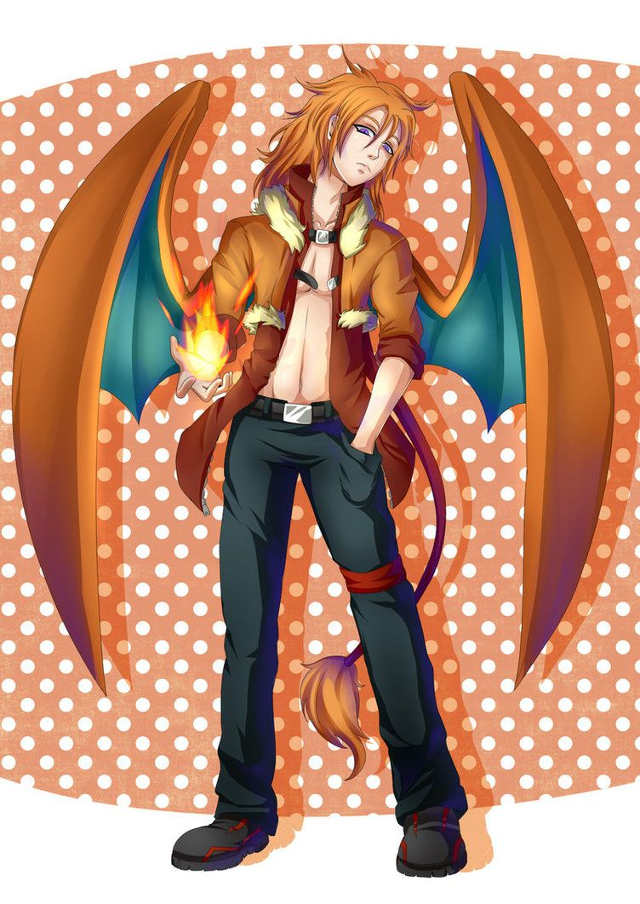

Hugo Nelson
Personality: Hugo is extremely passionate and emotional, and known to be very hot-headed and temperamental. When not angry, Hugo is a suave romantic, soft with words, and quite flirtatious towards women. When he channels his emotion on love rather than on rage, he can be affectionate and extremely caring, feeling the need to protect, and even cool down for those whom he truly loves.
Age: 16
Gender: Male
Eye Color: Brown
Hair Color: Orange
Skin Color: Dark Brown
Hometown: Cinnabar Island
Home Region: Kanto
Trivia:
Hugo’s favorite food is spicy sausage curry.
One of Hugo’s favorite things to do is have heat-based challenges with his friends. Some examples include who can stay in the sauna the longest or who can handle the spiciest hot sauce.
Hugo has motion sickness and cannot be on a boat for longer than 5 minutes before he throws up. Oddly, he can fly with no problems.
Hugo, despite what can be assumed, loves to recline on floaties in the ocean or a pool, since it reminds him of his home.
Hugo hates rainy days and his mood is often affected by them, becoming sluggish and tired.
Pokémon:

Charizard♂
“Ran”
Fire/Flying
Ability: Blaze
When Ran becomes weak or tired, his body becomes surrounded by a fiery aura, powering up his Fire-type attacks.
Personality:Ran is carefree and reckless in nature, he is a fiercely loyal and protective friend. He is willing to go down fighting for his friends, regardless of how futile it might seem. Ran has a straightforward mind and often tackles issues with a "hands-on" approach. His solution to problems often involves violence.
MOVES:
Flamethrower (Fire)
Ran releases a red-orange stream of fire from his mouth at the opponent.
Thunder Punch (Electric)
Ran's fists and body become outlined by yellow electricity. Charizard then punches the opponent with one of his fists.
Bulldoze (Ground)
Ran's body becomes surrounded by an orange aura. He then stomps on the ground and creates an orange ring of aura pulsating from where he stomped, causing the ground to shake.
Sky Attack (Flying)
Ran's body becomes surrounded by a gradually intensifying light blue aura. Once the aura flares up, Ran flies into the opponent at top speed. The longer Ran charges, the more damage it does.

BURST
As a user of Burst, Hugo can use many of the abilities of the Pokémon he combines with Ran, his Charizard. Fusing with Ran gives Hugo the ability to fly with his wings, fire manipulation, and powerful claws.
TECHNIQUES:
Hugo uses Flamethrower while flying at an opponent. His body becomes enveloped in fire and he then uses Sky Attack to buff the effects. He then collides with the enemy, causing a powerful fiery explosion.
Hugo quickly flies up to an enemy and grabs them, carrying them high into the sky. He then uses Flamethrower down on the ground to create a wildfire. He then throws the enemy into it following up with an even more powerful Flamethrower.
This only works if Hugo has the Blaze ability activated. After taking many up close and personal attacks, Hugo uses his wings to slap both sides of the opponent's head, stunning them. He then grabs them by the throat and unleashes a white-hot powerful Flamethrower at close range, absolutely obliterating them.